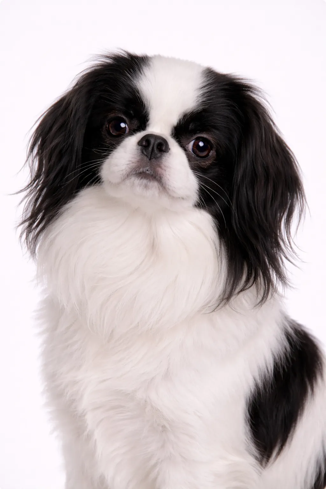

Chin Japonés
Pequeño en tamaño pero enorme en personalidad — el perro faldero perfecto.
8-11 in
4-11 lbs
Puntuaciones de la Raza
Temperamento
Descripción
El Chin Japonés se describe a menudo como felino por su naturaleza meticulosa y su preferencia por lugares elevados. Son compañeros elegantes y tranquilos dignos de la realeza.
Temperamento
El Chin Japonés es conocido por ser encantador, noble y amoroso. La socialización temprana les ayuda a convertirse en compañeros equilibrados.
Salud
Generalmente saludable con una esperanza de vida de 10-12 años. Las preocupaciones comunes incluyen luxación patelar y problemas dentales. Los chequeos veterinarios regulares y el cuidado preventivo son importantes. Mantener un peso saludable ayuda a prevenir muchos problemas de salud.
Ejercicio
Necesidades de ejercicio bajas a moderadas con paseos cortos diarios y juego interior. Se adaptan bien a la vida en apartamento cuando se satisfacen sus necesidades básicas. La estimulación mental a través de juguetes interactivos los mantiene entretenidos. Las actividades suaves se adaptan al temperamento tranquilo de esta raza.
⦿ ¿Es Esta Raza Adecuada para Ti?
✓ Ideal Para
- Residentes de apartamentos
- Personas mayores
- Quienes buscan una raza toy tranquila
✗ No Ideal Para
- Familias muy activas
- Hogares con niños pequeños bruscos
Nuestro Veredicto: El Chin Japonés es un compañero elegante y tranquilo con una naturaleza felina. Perfectos para apartamentos y personas mayores que buscan un perro refinado y de bajo mantenimiento en ejercicio.